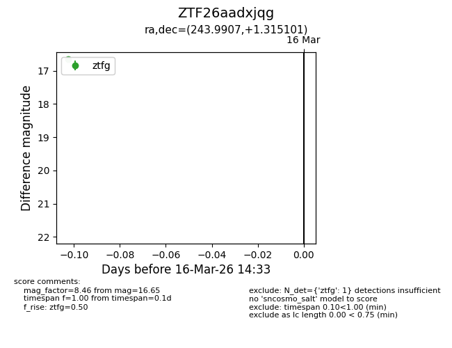
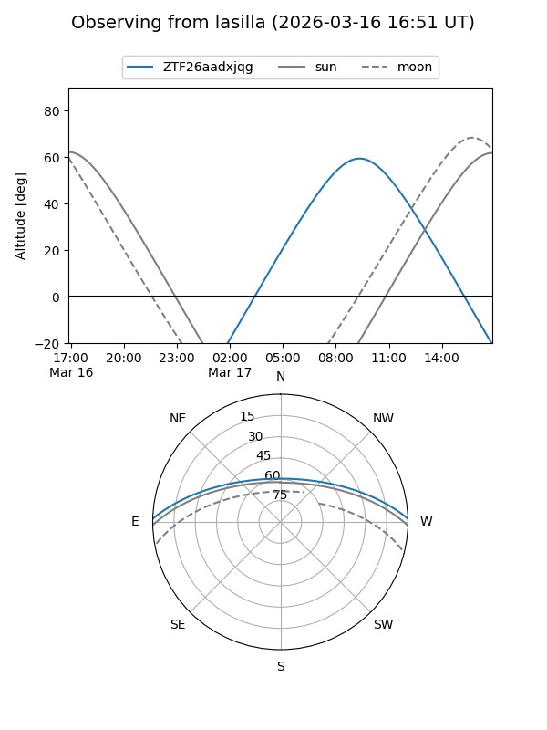
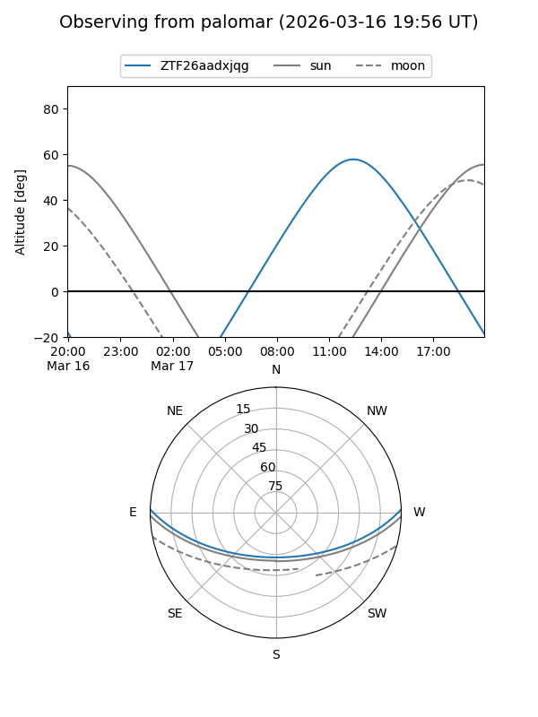
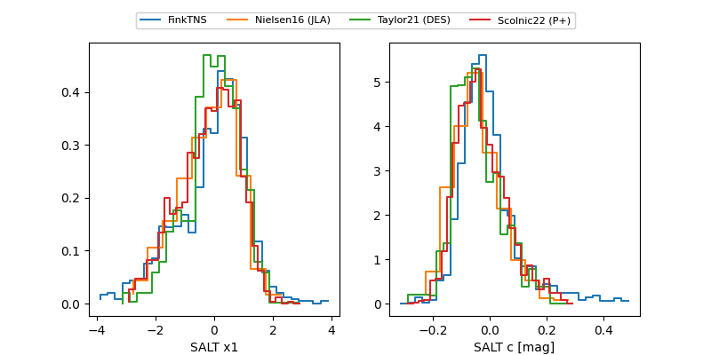

ZTF26aadxjqg
Target ZTF26aadxjqg at 2026-03-16 14:35
Aliases and brokers:
FINK: link
Lasair: link
ALeRCE: link
alt names
ZTF26aadxjqg (ztf,fink_ztf)
Coordinates:
equatorial (ra, dec) = 243.9907,+1.31510
equatorial (HMS+DMS) = 16:15:57.77,+01:18:54.36
galactic (l, b) = (14.0882,+34.66797)
Flags:
Photometry:
last ztfg=16.65
1 ztfg detections
Lightcurve

Visibility


Additional plots
